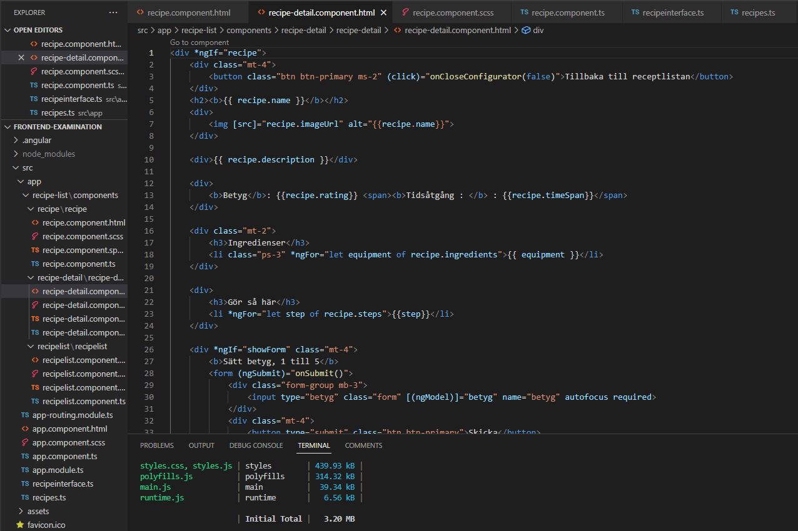

Receptlista
Under front-end kursen har jag lärt mig om HTML, CSS, JavaScript, TypeScript, React och Angular. Denna uppgift gick ut på att använda komponenter i Angular för att skapa ett receptsida med tre recept att välja på med varsin detaljerad sida om ingredienser, steg och ett formulär för att lämna ett betyg.